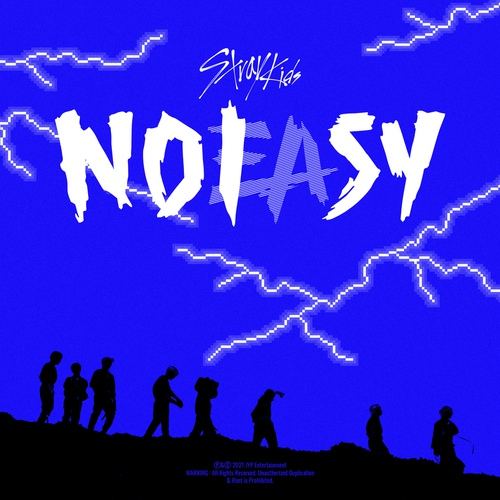

내가 좋아하는 노래를 1절만 소개합니다
멤버
- 방찬
- 리노
- 창빈
- 현진
- 한
- 필릭스
- 승민
- 아이엔

소리꾼
mv
← 유튜브에서 감상하기
Oh
소리를 지르는 내가 oh
창빈
이란다
내 자리는
내가
취한다
태도는 터프하게 트랙 위를 폭주하는 기관차
ey
몰아치는 허리케인에 뒤집어진 우산
잔소리꾼의 최후 하하 꼴이 좋구나
나무꾼은 어서 돌아가시오 여긴 나무랄 데가 없네
납작해질 리 없는 콧대 목 핏대와 함께 세운 줏대
훨씬 더 웅장하게 내는 경적 소리
빵빵
빵빵
Here they come
악당 무리에 뜨거운 피가 돌아 온몸에 번져
소문난 꾼들의 모임에 쏟아지는 눈빛
은
Freezing cold
but I know we'll burn forever
해보라는 태도 난 여전히
할 말을 내뱉지
퉤 퉤 퉤
소리꾼
소리꾼
(퉤 퉤 퉤)
소리꾼
Man I'm not sorry, I'm dirty
우
르
르
쾅쾅
쾅쾅
천둥
(빠라바밤)
구름 타고 두둥
(빠라바밤)
바람과 함께 등장한 꾼
BANG BANG BANG
BOOM
Man I'm not sorry
, I'm dirty
Keep on talking, we don't play by the rules